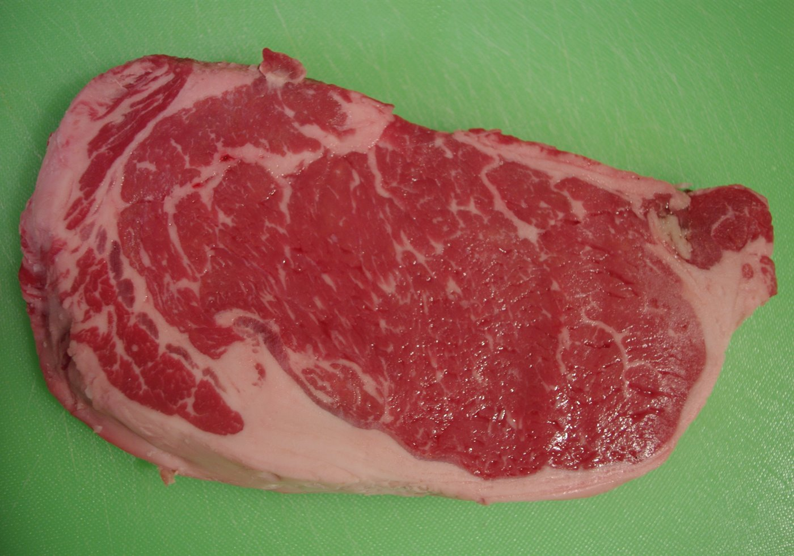
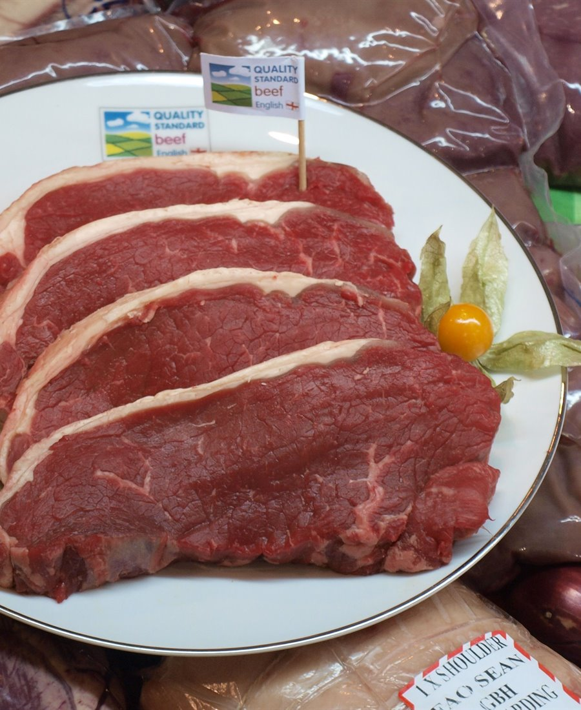
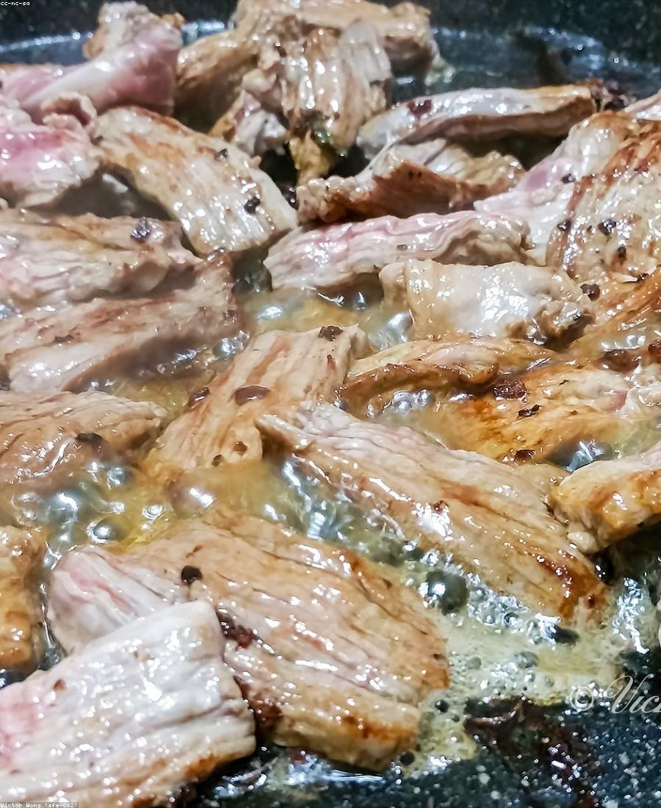
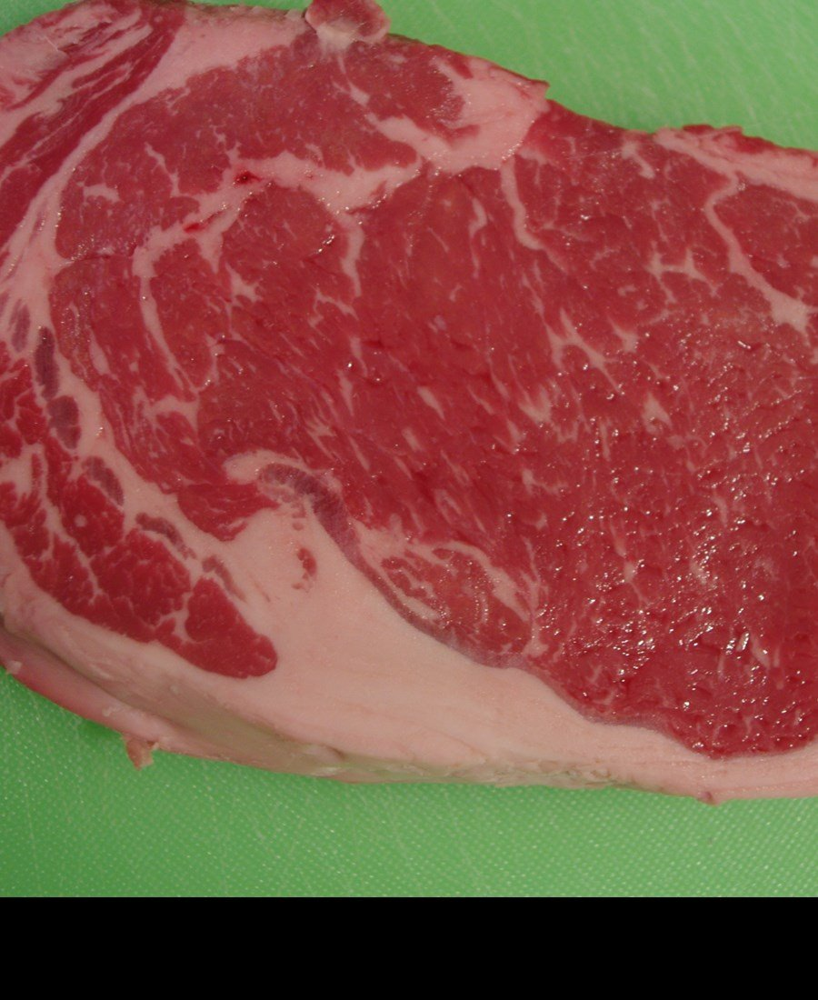
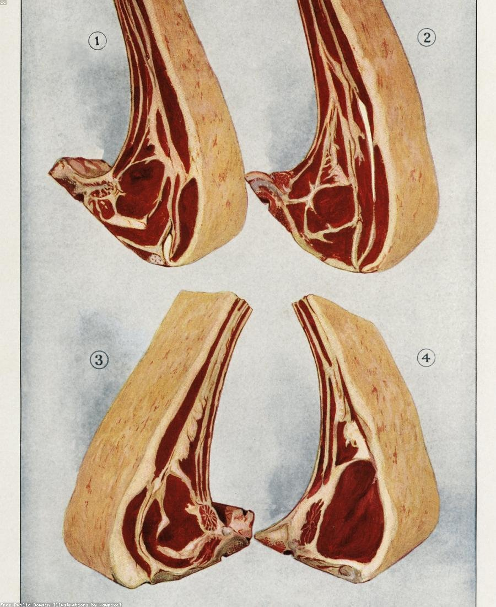
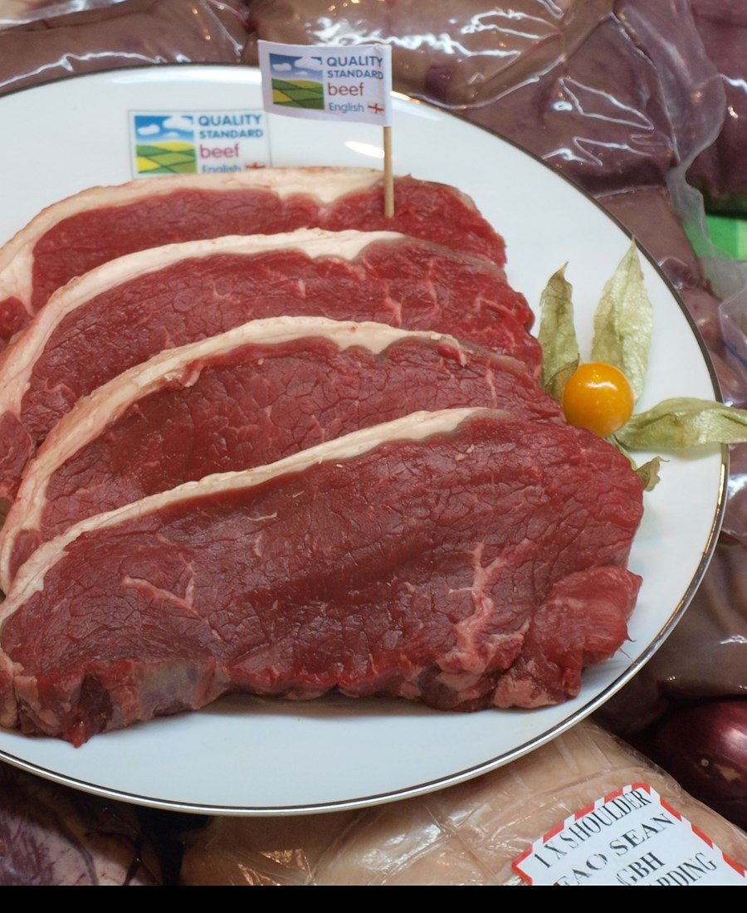
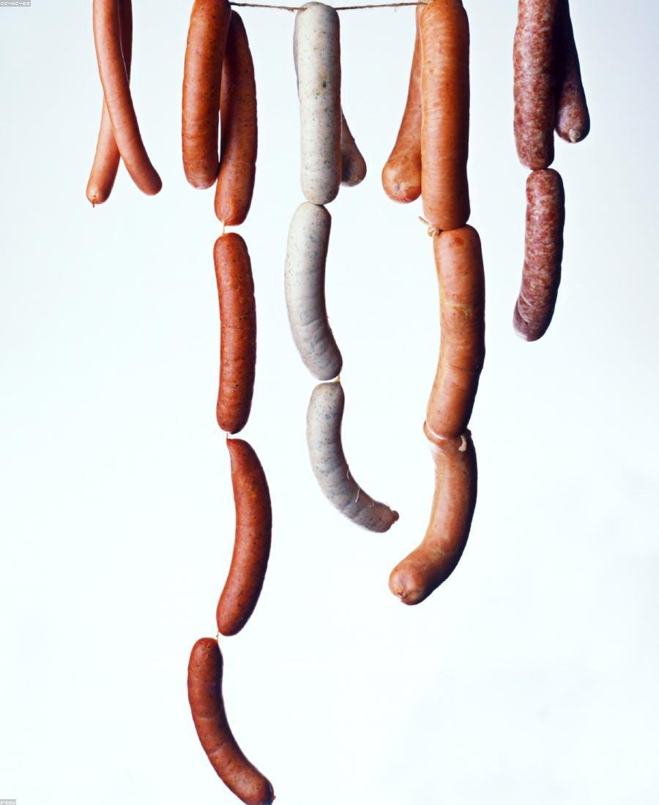

Canoas - RS | Churrasco e dia a dia
Carnes de qualidade para o seu churrasco perfeito
No Esquinão da Carne você encontra cortes frescos, atendimento rápido e confiança de açougue tradicional. Escolha sua carne agora e fale direto com nossa equipe no WhatsApp.

Sobre o Esquinão
Tradição de bairro com padrão de qualidade em cada corte
O Esquinão da Carne nasceu para atender quem busca carne boa sem complicação. Aqui você encontra atenção no balcão, indicação certa para cada receita e a segurança de levar para casa um produto confiável.
Produtos
Escolha ideal para o churrasco de domingo e para a semana toda
Carnes bovinas
Cortes macios e saborosos para assar, grelhar ou preparar no dia a dia com qualidade.
Pedir no WhatsAppFrango
Opções frescas para refeições rápidas e econômicas, sem abrir mão do sabor.
Pedir no WhatsAppSuínos
Cortes suínos selecionados para pratos suculentos e churrascos com mais variedade.
Pedir no WhatsAppCortes especiais
Peças premium para quem quer impressionar no churrasco com sabor e acabamento.
Pedir no WhatsApp
Diferenciais
Motivos para comprar no Esquinão da Carne
Carne fresca
Mais sabor e textura no prato com cortes sempre bem selecionados.
Qualidade garantida
Você compra com confiança e leva para casa carne no padrão que procura.
Atendimento rápido
Agilidade no WhatsApp e no balcão para facilitar sua compra.
Galeria
Visual de dar água na boca






Depoimentos
Clientes que recomendam de verdade
★★★★★
"Comprei para o churrasco de família e a carne veio excelente. Atendimento rápido e atencioso."
Marcos P.
★★★★★
"Sempre peço para o dia a dia. Qualidade constante e preço justo, sem surpresa."
Daniela R.
★★★★★
"Os cortes especiais realmente fazem diferença no sabor. Virou meu açougue de confiança."
Eduardo S.
Localização
Passe no Esquinão ou peça pelo WhatsApp
Endereço:
Rua Curumim, 241 - Canoas - RS
Telefone:
(51) 99125-2827
Seu próximo churrasco começa com um bom corte
Chame agora no WhatsApp e garanta carnes frescas com atendimento de confiança.
Quero pedir agora